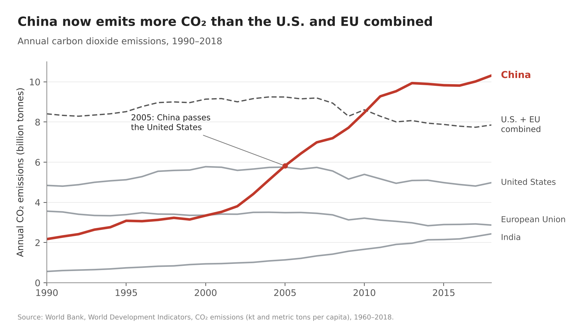
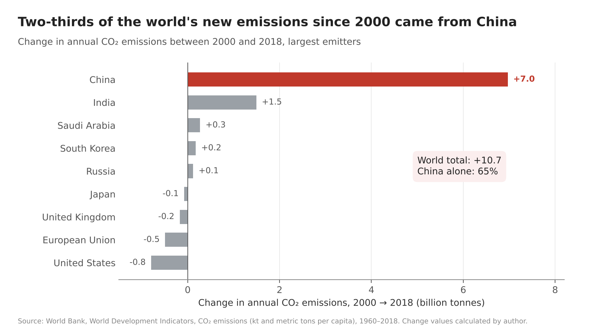
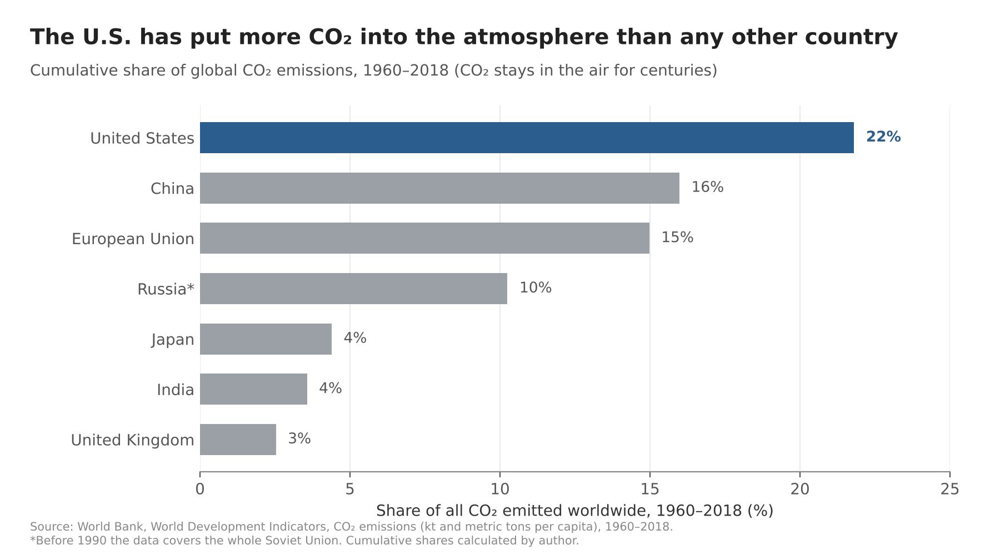
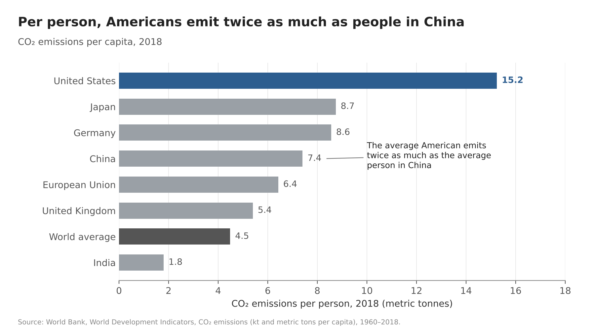

Proposition: China is now the country most responsible for climate change.
Data: World Bank, World Development Indicators, climate-change file (CO₂ emissions in kilotons and metric tons per capita, 1960–2018). Both sides use the same dataset; each side is one visualization made of two charts.
Each design decision is scored from −2 (fully deceptive) to +2 (fully earnest).
FOR the Proposition


Design Decisions and Rationale:
- −1.5 Only total emissions, never per person. Both charts use total CO₂ for each country. China has about 1.4 billion people, so on a per-person basis it is around the middle of the pack, roughly half of the U.S. Leaving per capita out completely is the single biggest thing that makes this side work. I thought about adding a small per-capita note for fairness, but even one number would have weakened the argument, so I left it out. This is a deceptive choice by omission: nothing on the chart is false, but a key piece of context is missing.
- −1 Picking the start years (1990 for the line chart, 2000 for the bar chart). Figure 1 starts in 1990 and Figure 2 measures change from 2000, right before China's emissions took off after it joined the WTO in 2001. Starting in 2000 also makes the U.S. and EU look like they are fixing the problem with negative bars, when part of that drop is likely manufacturing moving to China. The dataset doesn't measure that kind of 'outsourced' emissions, so I didn't bring it up. I considered using 1960 as the start, but then the U.S. would dominate most of the timeline.
- +0.5 Calculated fields: the 2000→2018 change and the "65%" callout. Instead of plotting raw values, I calculated each country's change in annual emissions and China's share of the world's total increase (+7.0 of +10.7 billion tonnes = 65%). One big, memorable number is very persuasive, and the math itself is correct and the source line says the values were calculated by me, which is why I scored it slightly earnest. The slant comes from which change I chose to calculate, not from the arithmetic.
- −0.5 A "U.S. + EU combined" reference line, and red for China. Showing that China passed the U.S. alone is less striking than showing it passed two major economies at once, so I added a dashed U.S. + EU line. China is the only colored mark (red) and everything else is gray. Highlighting one series is a normal, earnest technique for focus, but red also reads as “danger” or “bad,” which quietly adds a judgment. I considered a neutral color like dark blue, but it felt less urgent.
- +2 Honest-looking chart basics. Both charts start at zero, label lines and bars directly instead of using a legend, cite the World Bank as the source, and use calm, factual titles. I kept these earnest on purpose: they make readers trust the chart, and they mean nothing would look obviously wrong on a first look. I avoided tricks like a truncated y-axis because they are easy to spot and would backfire.
AGAINST the Proposition


Design Decisions and Rationale:
- +0.5 Switching to cumulative emissions, framed as the fair measure. Figure 3 adds up every year from 1960 to 2018 and shows each country's share of the world total, which puts the U.S. first at 22% and China at 16%. Cumulative emissions are a real and widely used way to measure responsibility, because CO₂ stays in the atmosphere for a very long time. That's why I scored it slightly earnest. But the subtitle “CO₂ stays in the air for centuries” is also there to make this sound like the only fair way to measure it.
- −1 Showing only final totals, not the trend. The cumulative bar chart shows one number per country and hides time completely. Readers can't see that China now emits about twice as much as the U.S. every year and is catching up quickly. A line of cumulative totals over time would have shown that gap closing, which is exactly why I didn't use one.
- −2 Cherry-picking which countries appear in the per-capita chart. In Figure 4 I left out Australia (15.5), Canada (15.5) and Saudi Arabia (15.3), which all emit slightly more per person than the U.S. (15.2), as well as South Korea and Russia. Without them, the U.S. looks like the clear #1. This is the most deceptive decision on the page, because the chart looks complete but the comparison set was chosen to produce the answer I wanted.
- −0.5 How countries are grouped. The EU is shown as one bar, but the U.K. is shown separately. If Europe were one bar it would get much closer to the U.S. in Figure 3. I also had to decide how to label Russia: in this dataset, the years before 1990 cover the whole Soviet Union, which is why Russia's share is 10%. I added an asterisk and a footnote for that, because hiding it would be a real data error and not just framing.
- +1 Context markers: blue highlight, world average, and an annotation. The U.S. is the only colored bar, in a cooler blue so it doesn't look as alarming as the red on the other side. I added the world average (4.5 tonnes) as a dark reference bar and a callout that the average American emits twice as much as the average person in China (15.2 vs 7.4, which is accurate). The reference bar and the accurate annotation are earnest context, but the callout also points readers to the one comparison that helps my argument.
Final Reflection
While exploring the data, I noticed that the same CO₂ dataset gives completely opposite answers depending on which number you look at. In total annual emissions, China is far ahead, but per person or added up since 1960, the U.S. comes out on top. That is why I chose this proposition: both sides could be supported with real numbers. The FOR side was easier to make, because total emissions is the measure most people already assume, so once I showed China’s numbers the reader basically draws the conclusion on their own. The AGAINST side was harder, because I first had to convince the reader that cumulative or per-person emissions is the fairer way to measure responsibility, which is why I added “CO₂ stays in the air for centuries” to the subtitle. The hardest part overall was deciding which countries to include in each chart. Adding or removing a single country could flip the result, and every time I took one out, I had to ask myself whether I was focusing the chart or hiding something.
What surprised me most was how little I had to lie. None of the four charts uses a false number, every axis starts at zero, and every chart cites its source. All of the slant comes from which data I picked, which year I started from, and which countries I grouped together. The second surprise was that I almost made a real mistake. When I double-checked the numbers for the final version, I found that in this dataset, Russia’s values before 1990 actually cover the whole Soviet Union, which is why Russia’s cumulative share is as high as 10%. If I had not added a note, that would not have been a persuasive design choice but an actual data error. It made me realize that, to a reader, an intentional choice and an honest mistake can look exactly the same. Finally, I did not expect color to matter this much. Highlighting one country is a normal technique, but China in red looks like an accusation, while the U.S. in a calm blue feels more neutral.
After this project, I no longer think a visualization can be completely neutral. Every chart has to choose a measure, a time range, and what to compare against, and each of those choices pushes the reader in some direction. So for me, ethical visualization is not about avoiding persuasion. It is about making sure the reader could still accept my conclusion even if they knew what I left out. The test I came up with is simple: if the reader learned the information I omitted, would their conclusion change? Using cumulative emissions to argue that the U.S. is most responsible passes this test. Even if the reader learns that China now emits more every year, “the U.S. has emitted the most in total” is still true; they just gain another perspective. Leaving Australia, Canada, and Saudi Arabia out of the per-capita chart fails it. Once the reader knows they emit more per person than the U.S., the claim that Americans are the biggest emitters per person is simply no longer true. Some choices fall in between, like measuring change from 2000, so the line is not always clear. But I think the minimum is transparency, such as noting that values were calculated by me and flagging the Soviet Union data, so that readers have a chance to check the claim for themselves.